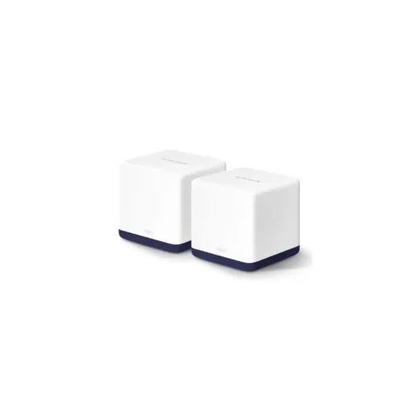
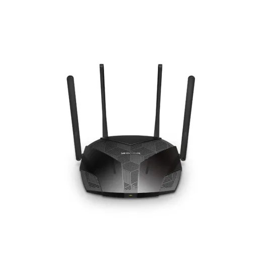
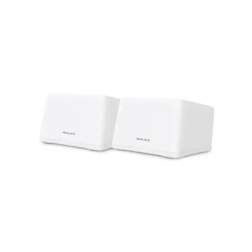

Inicio › Routers y redes › Mercusys
Routers y redes Mercusys en Honduras: precios comparados
12 productos Mercusys en 2 tiendas (Sycom, Acosa). Desde L 245.
 Router Mercusys 300Mbps 4g Lte Cat4 2.4Ghz Ac1200 Dual BandL 1,495En 2 tiendas · más barato en Sycom
Router Mercusys 300Mbps 4g Lte Cat4 2.4Ghz Ac1200 Dual BandL 1,495En 2 tiendas · más barato en Sycom Router Inalambrico MERCUSYS AC12G AC1300 Dual BandL 1,150En Sycom
Router Inalambrico MERCUSYS AC12G AC1300 Dual BandL 1,150En Sycom Router Inalámbrico Portátil MERCUSYS 4G LTE · 150 Mbps 2, 4 GHz Batería 2200 mAh MT110L 1,195En Sycom
Router Inalámbrico Portátil MERCUSYS 4G LTE · 150 Mbps 2, 4 GHz Batería 2200 mAh MT110L 1,195En Sycom Router Mercusys N MW330HP 2.4 GHz · 3 x Antenas 7dbi · 300Mbps · 3 x LAN 10/100 Mbps · 1 x WAN 10/100 MbpsL 445En 2 tiendas · más barato en Acosa
Router Mercusys N MW330HP 2.4 GHz · 3 x Antenas 7dbi · 300Mbps · 3 x LAN 10/100 Mbps · 1 x WAN 10/100 MbpsL 445En 2 tiendas · más barato en Acosa Router Inalambrico MERCUSYS MR60X AX1500 Wifi 6L 1,595En Sycom
Router Inalambrico MERCUSYS MR60X AX1500 Wifi 6L 1,595En Sycom
Router Mercusys Mesh Halo H50G(2-pack) AC1900 Dual BandL 1,725En Sycom
Router Inalambrico MERCUSYS MR70X AX1800 Dual Band Wifi 6L 1,950En Sycom Switch 8 Puertos 10/100/1000 Mbps Mercusys P/Escritorio Ms108gL 494.99En Acosa
Switch 8 Puertos 10/100/1000 Mbps Mercusys P/Escritorio Ms108gL 494.99En Acosa Switch 5 Puertos 10/100/1000 Mbps Mercusys P/Escritorio Ms105gL 345En Acosa
Switch 5 Puertos 10/100/1000 Mbps Mercusys P/Escritorio Ms105gL 345En Acosa Switch 8 Puertos 10/100 Mbps Mercusys P/Escritorio Ms108L 295En Acosa
Switch 8 Puertos 10/100 Mbps Mercusys P/Escritorio Ms108L 295En Acosa Switch 5 Puertos 10/100 Mbps Mercusys P/Escritorio Ms105L 245En Acosa
Switch 5 Puertos 10/100 Mbps Mercusys P/Escritorio Ms105L 245En Acosa
Router Mercusys Mesh Halo H47BE(2-pack) BE9300 Wifi 7L 5,750En Sycom
Preguntas frecuentes
¿Dónde están más baratos los routers y redes Mercusys en Honduras?
Sycom tuvo el precio más bajo en 1 de 2 productos Mercusys que se venden en varias tiendas (14 de noviembre de 2026).